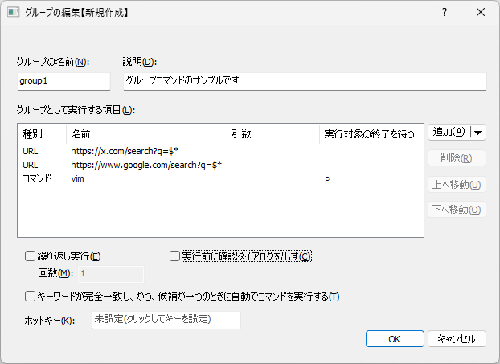
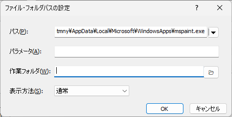
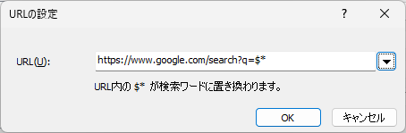

グループコマンド
本アプリに登録済みのコマンド、ファイル・フォルダ、URLを複数まとめて実行するためのコマンド。
以下のようなケースを想定している。
複数のWebサイトを一括して開く(例:GMailとGoogleカレンダーを同時に開く)
同じキーワードで複数のWebサイトを横断検索する(例:Goolge検索とBing検索を同時にする)
定型作業で毎回実行しているプログラムやWebサイトをコマンド一つですべて実行する
設定画面

上の図の場合、URL(X検索) → URL(Google検索) → 登録済コマンド(vim) という順に項目を順次実行する。
実行対象の終了を待つにチェックすると、その項目の実行対象が終了するのを待ってから次の項目を実行する。
グループの名前
入力画面からグループコマンドを実行するためのキーワード説明
コメント表示欄に記載される文字列グループとして実行する項目
グループに含める項目の一覧。登録できる項目は、通常のコマンド、パス、URL。追加
メニューから項目の種類を選択して、一覧に項目を追加する。「項目の追加」節を参照。削除
一覧から選択した項目を削除する上へ移動
一覧で選択した項目を一つ上に移動する下へ移動
一覧で選択した項目を一つ下に移動する
一覧には、項目の種別、名前、パラメータ、実行対象の終了を待つが表示される。
項目をダブルクリックすると、登録内容を編集できる。
実行対象の終了を待つチェックすると、実行対象のプロセスが終了するまで次の項目を実行しない
実行対象が別のプロセスなどに処理を引き継いで終了する場合、引き継ぎ先で行われる処理の完了までは待機できない
URLを指定した項目では利用できない。Webページの読み込みや、その後のWeb上の処理完了を待つことはできない
プロセスが30秒以内に終了しない場合は、待機を終了して次の項目を実行する
チェックしない場合、項目を実行したあと、プロセスの終了を待たずに次の項目を実行する
繰り返し実行する
指定した回数分だけグループ内の項目を繰り返し実行する回数繰り返し実行するをチェックした場合の実行回数実行前に確認ダイアログを出す
グループコマンド実行時に確認ダイアログを表示するキーワードが完全一致し、かつ、候補が一つのときに自動でコマンドを実行する
キーワードが完全一致し、候補が一つだけの場合に、入力を確定しなくてもコマンドを実行する
この機能が発動すると、グループ内の項目に対してパラメータを渡すことができないのでご注意ホットキー
コマンドを呼び出すキーを設定できる。設定したキーを押下するとコマンドを実行できるようになる。
項目の追加
追加ボタンのメニューから、登録する項目の種類を選択する。
コマンド本アプリに登録済みのコマンドを選択する。選択したコマンドに渡すパラメータも指定できる。パス指定実行ファイルまたはフォルダのパスを指定する。「パスの設定」節を参照。URL指定ブラウザで開くURLを指定する。「URLの設定」節を参照。
パス指定

パス実行するファイルまたはフォルダのパスを指定する。右側のメニューからファイル選択またはフォルダ選択を行うこともできる。パラメータファイルの実行時に渡すパラメータを指定する。作業フォルダファイルを実行するときの作業フォルダを指定する。右側のボタンからフォルダを選択できる。表示方法実行するウインドウの表示方法を、通常、非表示、最小化、最大化から選択する。
パスには存在するファイルまたはフォルダを指定する必要がある。指定したパスが存在しない場合は、エラーメッセージが表示され、登録できない。
URL指定

URLブラウザで開くURLを指定する。http://またはhttps://で始まるURLを指定する必要がある。$*URLに$*を含めると、グループコマンドの実行時に入力したパラメータで置き換えられる。検索サイトのURLなど、入力したキーワードをURLに埋め込みたい場合に使用する。▼ボタン Google、Bing、DuckDuckGo、X、Amazon、YouTubeの検索URLをプリセットから選択できる。
制限事項
グループコマンドでは下記のコマンド種別をサブコマンドに含めても正しく動作しない。
上記のコマンド種別はコマンドを実行したタイミングで追加の入力を要するものであるため、グループコマンドによる一括実行する動作と組みあわせることができない。
実行時の動作
押下キー |
動作 |
|---|---|
|
登録された内容を実行する |